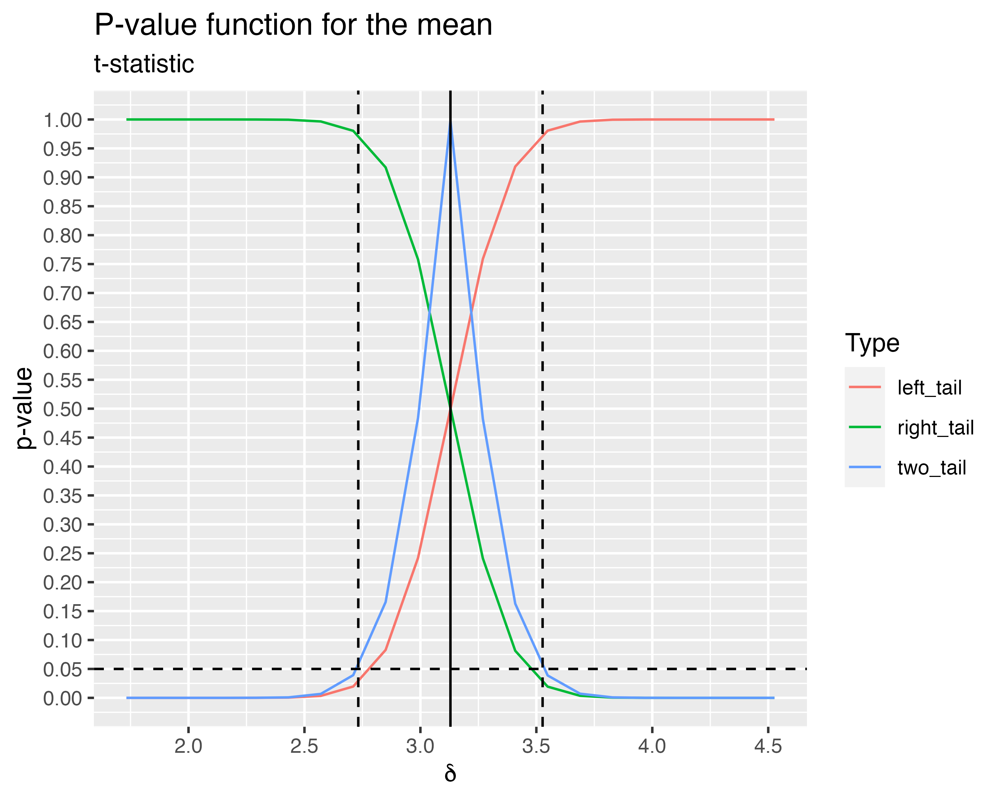
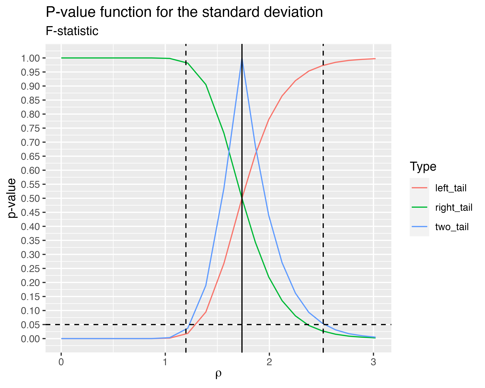
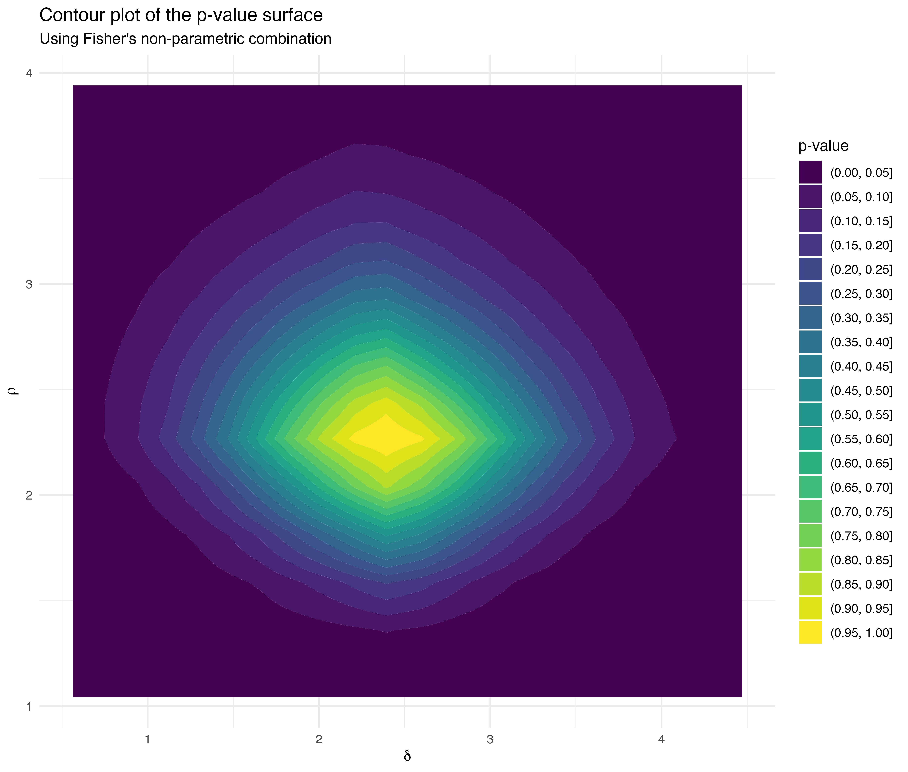
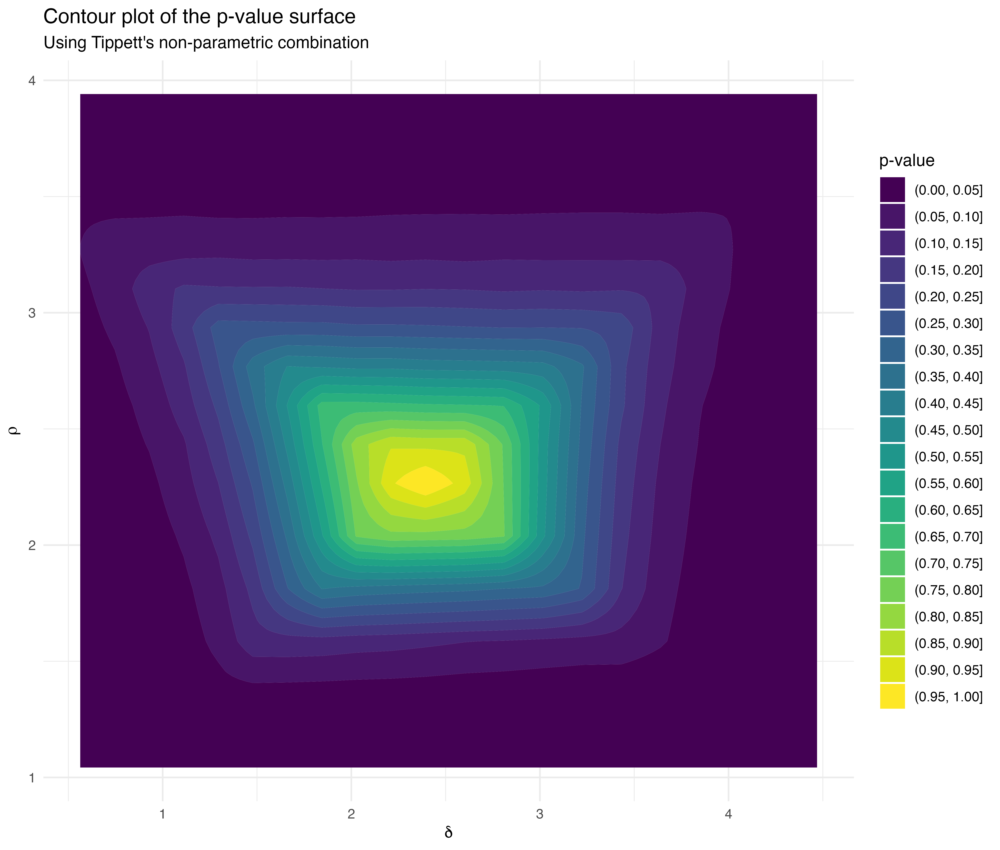

library(tidyverse)
library(flipr)
ngrid_in <- 20
ngrid_out <- 100
B <- 100000
n1 <- 30
n2 <- 30
set.seed(1301)
x1 <- rnorm(n1, mean = 0, sd = 1)
x2 <- rnorm(n2, mean = 3, sd = 1)
y1 <- rnorm(n1, mean = 0, sd = 1)
y2 <- rnorm(n2, mean = 0, sd = 2)
z1 <- rnorm(n1, mean = 0, sd = 1)
z2 <- rnorm(n2, mean = 3, sd = 2)
generate_grid <- function(center_value, min_value, max_value, n) {
stopifnot(center_value > min_value && center_value < max_value)
c(
seq(min_value, center_value, len = n / 2 + 1)[1:(n / 2)],
center_value,
seq(center_value, max_value, len = n / 2 + 1)[-1]
)
}The concept of \(p\)-value functions pertains to assessing the \(p\)-value of a set of null hypotheses and to plot this \(p\)-value surface on the domain defined by the set of null hypotheses. The idea behind is that if such a \(p\)-value function is available, you can deduce from it point estimates or confidence interval estimates for parameters used to define the nulls or extract a single \(p\)-value for a specific null of interest (Martin 2017; Fraser 2019; Infanger and Schmidt-Trucksäss 2019). In particular, there is another R package dedicated to \(p\)-value functions called pvaluefunctions.
test_param <- stats::t.test(x2, x1, var.equal = TRUE)
delta_min <- test_param$conf.int[1] - 1
delta_max <- test_param$conf.int[2] + 1
delta_pe <- mean(x2) - mean(x1)
delta_in <- generate_grid(delta_pe, delta_min, delta_max, ngrid_in)
null_spec_mean <- function(y, parameters) {
delta <- parameters[1]
y - delta
}
df <- tibble(
delta = delta_in,
two_tail = two_sample_pf(
parameters = delta,
null_specification = null_spec_mean,
x = x1,
y = x2,
statistic = stat_t,
B = B,
seed = 1234,
alternative = "two_tail"
),
left_tail = two_sample_pf(
parameters = delta,
null_specification = null_spec_mean,
x = x1,
y = x2,
statistic = stat_t,
B = B,
seed = 1234,
alternative = "left_tail"
),
right_tail = two_sample_pf(
parameters = delta,
null_specification = null_spec_mean,
x = x1,
y = x2,
statistic = stat_t,
B = B,
seed = 1234,
alternative = "right_tail"
)
)
delta_out <- generate_grid(delta_pe, delta_min, delta_max, ngrid_out)
df_mean <- tibble(
delta = delta_out,
two_tail = approx(df$delta, df$two_tail, delta)$y,
left_tail = approx(df$delta, df$left_tail, delta)$y,
right_tail = approx(df$delta, df$right_tail, delta)$y,
) %>%
pivot_longer(-delta)
df_mean %>%
ggplot(aes(delta, value, color = name)) +
geom_line() +
labs(
title = "P-value function for the mean",
subtitle = "t-statistic",
x = expression(delta),
y = "p-value",
color = "Type"
) +
geom_hline(
yintercept = 0.05,
color = "black",
linetype = "dashed"
) +
geom_vline(
xintercept = mean(x2) - mean(x1),
color = "black"
) +
geom_vline(
xintercept = stats::t.test(x2, x1, var.equal = TRUE)$conf.int,
color = "black",
linetype = "dashed"
) +
scale_y_continuous(breaks = seq(0, 1, by = 0.05), limits = c(0, 1))
test_param <- stats::var.test(y2, y1)
rho_min <- 1e-3
rho_max <- sqrt(test_param$conf.int[2]) * 1.2
rho_pe <- sd(y2) / sd(y1)
rho_in <- generate_grid(rho_pe, rho_min, rho_max, ngrid_in)
null_spec_sd <- function(y, parameters) {
rho <- parameters[1]
y / rho
}
df <- tibble(
rho = rho_in,
two_tail = two_sample_pf(
parameters = rho,
null_specification = null_spec_sd,
x = y1,
y = y2,
statistic = stat_f,
B = B,
seed = 1234,
alternative = "two_tail"
),
left_tail = two_sample_pf(
parameters = rho,
null_specification = null_spec_sd,
x = y1,
y = y2,
statistic = stat_f,
B = B,
seed = 1234,
alternative = "left_tail"
),
right_tail = two_sample_pf(
parameters = rho,
null_specification = null_spec_sd,
x = y1,
y = y2,
statistic = stat_f,
B = B,
seed = 1234,
alternative = "right_tail"
)
)
rho_out <- generate_grid(rho_pe, rho_min, rho_max, ngrid_out)
df_sd <- tibble(
rho = rho_out,
two_tail = approx(df$rho, df$two_tail, rho)$y,
left_tail = approx(df$rho, df$left_tail, rho)$y,
right_tail = approx(df$rho, df$right_tail, rho)$y,
) %>%
pivot_longer(-rho)
df_sd %>%
ggplot(aes(rho, value, color = name)) +
geom_line() +
labs(
title = "P-value function for the standard deviation",
subtitle = "F-statistic",
x = expression(rho),
y = "p-value",
color = "Type"
) +
geom_hline(
yintercept = 0.05,
color = "black",
linetype = "dashed"
) +
geom_vline(
xintercept = sqrt(stats::var.test(y2, y1)$statistic),
color = "black"
) +
geom_vline(
xintercept = sqrt(stats::var.test(y2, y1)$conf.int),
color = "black",
linetype = "dashed"
) +
scale_y_continuous(breaks = seq(0, 1, by = 0.05), limits = c(0, 1))
Assume that we have two r.v. \(X\) and \(Y\) that differ in distribution only in their first two moments. Let \(\mu_X\) and \(\mu_Y\) be the means of \(X\) and \(Y\) respectively and \(\sigma_X\) and \(\sigma_Y\) be the standard deviations. We can therefore write
\[ Y = \delta + \rho X. \]
In this case, we have
\[ \begin{cases} \mu_Y = \delta + \rho \mu_X \\ \sigma_Y^2 = \rho^2 \sigma_X^2 \end{cases} \Longleftrightarrow \begin{cases} \delta = \mu_Y - \frac{\sigma_Y}{\sigma_X} \mu_X \\ \rho = \frac{\sigma_Y}{\sigma_X} \end{cases} \]
In the following example, we have \(\delta = 3\) and \(\rho = 2\).
delta_pe <- mean(z2) - sd(z2) / sd(z1) * mean(z1)
rho_pe <- sd(z2) / sd(z1)
test_param_mean <- stats::t.test(z2, z1, var.equal = FALSE)
test_param_var <- stats::var.test(z2, z1)
delta_min <- test_param_mean$conf.int[1] - 1
delta_max <- test_param_mean$conf.int[2] + 1
rho_min <- 1e-3
rho_max <- sqrt(test_param_var$conf.int[2]) * 1.2
null_spec_both <- function(y, parameters) {
delta <- parameters[1]
rho <- parameters[2]
(y - delta) / rho
}
process <- function(delta, rho, x, y, B, combine_with) {
two_sample_pf(
parameters = map2(delta, rho, c),
null_specification = null_spec_both,
x = x,
y = y,
statistic = c("stat_mean", "stat_f"),
B = B,
seed = 1234,
combine_with = combine_with,
alternative = "two_tail"
)
}
process_cmp <- compiler::cmpfun(process)
delta_in <- generate_grid(delta_pe, delta_min, delta_max, ngrid_in)
rho_in <- generate_grid(rho_pe, rho_min, rho_max, ngrid_in)
delta_out <- generate_grid(delta_pe, delta_min, delta_max, ngrid_out)
rho_out <- generate_grid(rho_pe, rho_min, rho_max, ngrid_out)
# Fisher method to combine test statistics
Z_fisher <- t(outer(
X = delta_in,
Y = rho_in,
FUN = process_cmp,
x = z1,
y = z2,
B = B,
combine_with = "fisher"
))
df_fisher <- crossing(delta = delta_out, rho = rho_out) %>%
mutate(pvalue = map2_dbl(delta, rho, ~ {
pracma::interp2(
x = delta_in,
y = rho_in,
Z = Z_fisher,
xp = .x,
yp = .y
)
}))
# Tippett method to combine test statistics
Z_tippett <- t(outer(
X = delta_in,
Y = rho_in,
FUN = process_cmp,
x = z1,
y = z2,
B = B,
combine_with = "tippett"
))
df_tippett <- crossing(delta = delta_out, rho = rho_out) %>%
mutate(pvalue = map2_dbl(delta, rho, ~ {
pracma::interp2(
x = delta_in,
y = rho_in,
Z = Z_tippett,
xp = .x,
yp = .y
)
}))
df_fisher %>%
filter(rho >= 1) %>%
ggplot(aes(delta, rho, z = pvalue)) +
geom_contour_filled(binwidth = 0.05) +
labs(
title = "Contour plot of the p-value surface",
subtitle = "Using Fisher's non-parametric combination",
x = expression(delta),
y = expression(rho),
fill = "p-value"
) +
theme_minimal()
df_tippett %>%
filter(rho >= 1) %>%
ggplot(aes(delta, rho, z = pvalue)) +
geom_contour_filled(binwidth = 0.05) +
labs(
title = "Contour plot of the p-value surface",
subtitle = "Using Tippett's non-parametric combination",
x = expression(delta),
y = expression(rho),
fill = "p-value"
) +
theme_minimal()
Fraser, D. A. S. 2019. “The P-Value Function and Statistical Inference.” The American Statistician 73 (sup1): 135–47. https://doi.org/10.1080/00031305.2018.1556735.
Infanger, Denis, and Arno Schmidt-Trucksäss. 2019. “P Value Functions: An Underused Method to Present Research Results and to Promote Quantitative Reasoning.” Statistics in Medicine 38 (21): 4189–97. https://doi.org/10.1002/sim.8293.
Martin, Ryan. 2017. “A Statistical Inference Course Based on P-Values.” The American Statistician 71 (2): 128–36. https://doi.org/10.1080/00031305.2016.1208629.